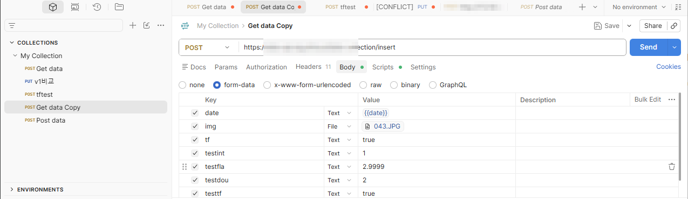
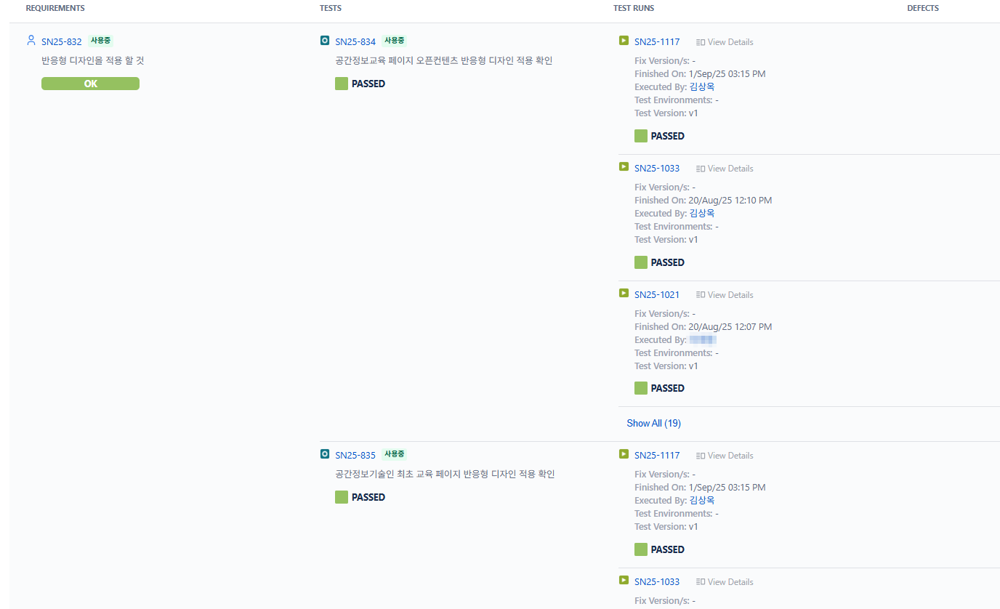
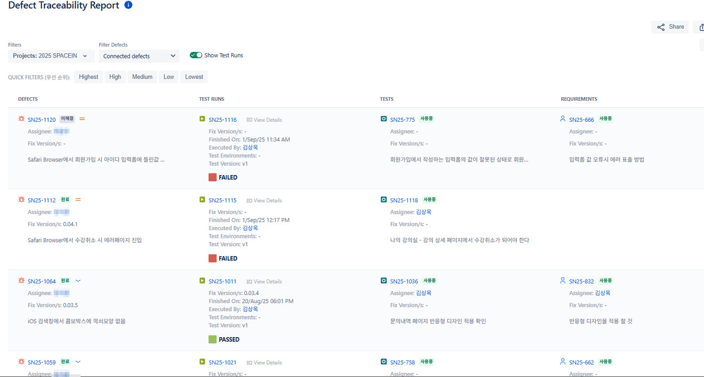
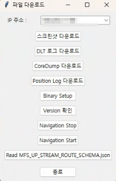

UIを経由せずAPIを直接叩いてフロントエンドでしか防げていなかった入力チェックとXSSの経路を見つけた事例、要件–テストケース–不具合のトレーサビリティ体制、繰り返し作業を減らすためにつくったツールです。
UIで弾かれる値がサーバーでも弾かれるかは確認されておらず、要件–テストケース–不具合がばらばらに管理されていました。
APIレベルまで掘り下げて検証し、トレーサビリティの体制を整え、繰り返し作業はツールで減らしました。
サーバー側検証の欠如とXSSの経路を発見して改善を主導し、要件カバレッジと不具合のトレーサビリティを確保。
役割 · API検証・トレーサビリティ体制の確立・業務ツールの制作
フロントエンドの入力チェックはユーザーへの親切な仕掛けにすぎず、品質保証ではありません。 そこでUIを経由せずREST APIを直接呼び出し、同じルールがサーバーでも守られているかを確認しました。

<script>タグを挿入して送信要件とテストケースを紐づけてトレーサビリティを確保し、不具合管理との連携で双方向に追跡できます。



Python · paramiko · Tkinter
リモートサーバーにSSHで接続し、ログ・スクリーンショット・CoreDump・バイナリを自動収集するGUIツール。 サービスの停止・再起動とバイナリのデプロイも同じ画面で行えます。
Python · re · threading
DLTログからKPIイベントを正規表現で解析し、区間ごとの時間差を計算。 手作業と比べて検証工数を30%削減することに貢献しました。
Python · pandas · folium
GNSSログから座標を抽出・検証してCSVに保存し、地図上に走行経路をポリラインで可視化します。
Google Apps Script × Slack
「毎月忘れずに共有すべきリンク」を、人の記憶から仕組みに移しました。 リンク漏れの警告、月末の事前チェックまで含め、失敗するケースを設計に組み込みました。
Python · Selenium · Tkinter
複数のブレークポイントで自動ログインしてページを巡回し、スクリーンショットを一括取得。 GitHub Releasesで実行ファイルを配布し、エンジニアでなくても使えるようにしました。